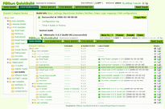

Introduction

Check out QuickBuild 2.0
Luntbuild is a powerful build automation and management tool. Continuous Integration or nightly builds can be easily set using a clean web interface. Executed builds are well managed using functions such as search, categorization, promotion, patching, deletion, etc. It also acts as a central build artifacts repository and download area for your whole team. Why Luntbuild?You may ask why Luntbuild, while there are already many good build automation tools such as Cruise Control, Anthill, and others. Our answer is:
Luntbuild makes advantage of quite a few open source libraries and frameworks listed here. Check professional version of Luntbuild,QuickBuild with rich set of features and responsive and knowledgable customer support. Please check QuickBuild online demo. Luntbuild developers use YourKit Profiler to profile Luntbuild: YourKit is kindly supporting open source projects with its full-featured Java Profiler. YourKit, LLC is creator of innovative and intelligent tools for profiling Java and .NET applications. Take a look at YourKit's leading software products: YourKit Java Profiler and YourKit ASP.NET Profiler. New version of Luntbuild will be developed with SWT Designer kindly offered by
Luntbuild developers use JavaRebel kindly offered by |